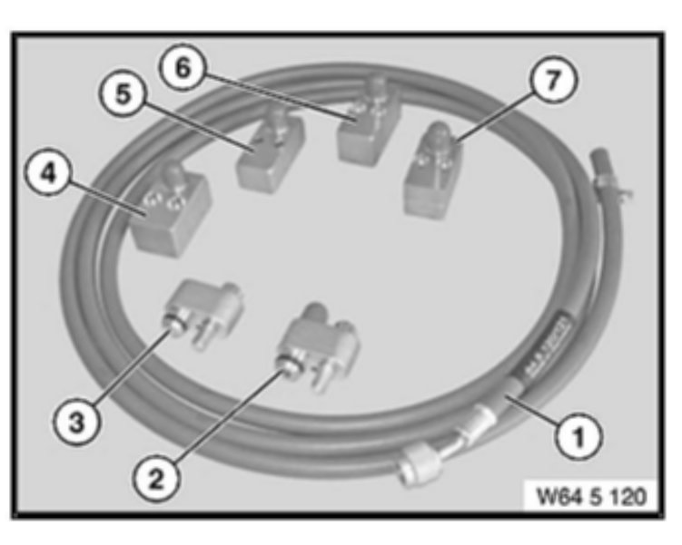
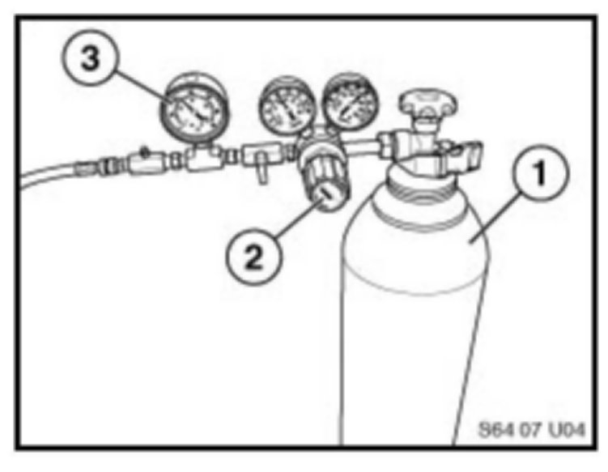
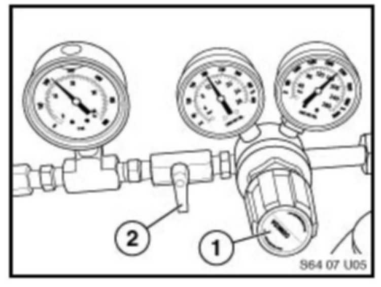
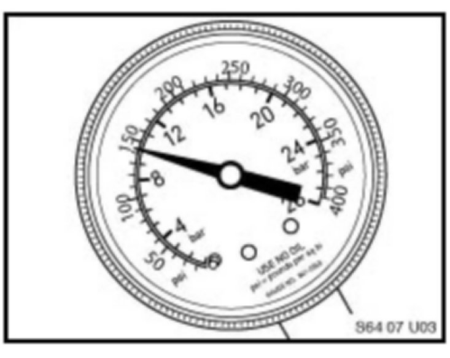

A/C - System Leak Testing Procedure Update
SI B64 01 08Heating and Air Conditioning
December 2010
Technical Service
This Service Information bulletin supersedes SI B64 01 08 dated September 2010.
[NEW]designates changes to this revision
SUBJECT
Air Conditioning System Leak Testing
MODEL
E82, E88 (1 Series)
E46 (3 Series)
E90, E91, E92, E93 (3 Series)
E60, E61 (5 Series)
E63, E64 (6 Series)
E83 (X3)
E70 (X5)
E71 (X6)
E85, E86 (Z4)
SITUATION
The customer complains of poor or no air conditioning cooling. After further diagnosis, the system is found to be low or empty of a refrigerant charge, but when using an electronic leak detector, no leak can be found.
Before replacing parts, perform a nitrogen leak test to confirm the location of the leak.
CAUSE
In most cases, an electronic leak detector is not sufficient for identifying small leaks in the system. Electronic leak detectors can give false alarms and can lead to an improper diagnosis of small leaks. A leak cannot be located exactly if accessibility is impaired (in the case of the expansion valve, evaporator or condenser).
PROCEDURE
Always use proper eye and hand protection whenever servicing air conditioning systems. Refer to repair manual RA 64 50... for further information.
1. Always troubleshoot and correct any faults in the IHKA/IHKR (Independent Heating and Air Conditioning) system before proceeding further.
2. Use symptom diagnosis to determine if the system is low or empty of a refrigerant charge (refer to SI B64 04 07).
3. If the source of the leak is difficult to detect, the evaporator and condenser area needs to be checked further for leaks.
4. A special testing adapter set (64 5 120) has been developed, which allows pressure testing of the air conditioning evaporator and condenser while they are still installed in the vehicle.
This prevents a lot of unnecessary disassembly of the vehicle for diagnosis purposes.

5. In order to use this adapter set, the following auxiliary materials will be needed:
^ Nitrogen (in a pressurized cylinder) obtained locally. Ensure that employees are advised of how to handle pressurized cylinders correctly (danger of asphyxiation). For this purpose, follow the notes and instructions in the technical safety specifications, available from the gas supplier.
^ Nitrogen tank set with pressure reducer.
^ Refer to SI B04 24 08 for tool information.
6. If the evaporator or condenser is suspected of leaking, recover the remaining refrigerant from the system, using a BMW approved refrigerant recovery machine.
7. Refer to the repair manual instructions "RA 64 51... Leak-testing condenser" for instructions on what adapters are needed, and the procedure for checking the condenser for leaks while installed in the vehicle.
8. Once the proper adapters have been fitted, connect the nitrogen bottle (1) with the pressure reducer (2) to the pressure gauge (3). Connect the special hose (64 5 121) to the fitting on the pressure gauge and the test adapter on the vehicle.

Note:
^ The testing apparatus must be leakproof
^ Ambient temperature and the temperature of the vehicle must not change significantly during the test procedure.
^ The vehicle must not be moved during the test period.
9. Ensure that the regulator (1) is backed off and the flow shutoff valve (2) is closed.

10. Open the nitrogen bottle valve slowly.
11. Open the valve (2) to the full open position. Note: the valve is shown in the closed position.
12. Apply test pressure of 10 bar (150 psi) slowly by turning the pressure regulator (1) clockwise.
13. A pressure of 20 bar (280 psi) must not be exceeded, as this Will damage the evaporator or other system components.
14. Once the test pressure of 10 bar (150 psi) is reached, close the valve (2). Back off the regulator and close the nitrogen bottle valve.
15. Check the leak tightness of the testing apparatus and of the connections at the adapters.

16. [NEW] Monitor the pressure over a period of 2 hours. Pressure should remain constant at 10 bar (150 psi).
17. [NEW] Any drop in pressure indicates that there is a leak in the evaporator or condenser, depending on which component is being tested.
18. Release the residual pressure from the line, using the pressure relief valve.
19. Replace the evaporator or condenser as needed.
After leak testing and repair:
^ Retest the system using the same procedure to ensure that there are no leaks.
^ Release all pressure from the test hose slowly.
^ [NEW] Replace all sealing rings before reassembly.
^ Evacuate and fill the system.
WARRANTY INFORMATION
For information only